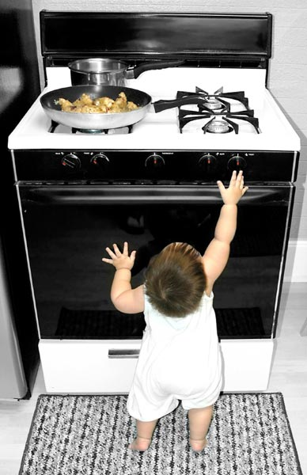
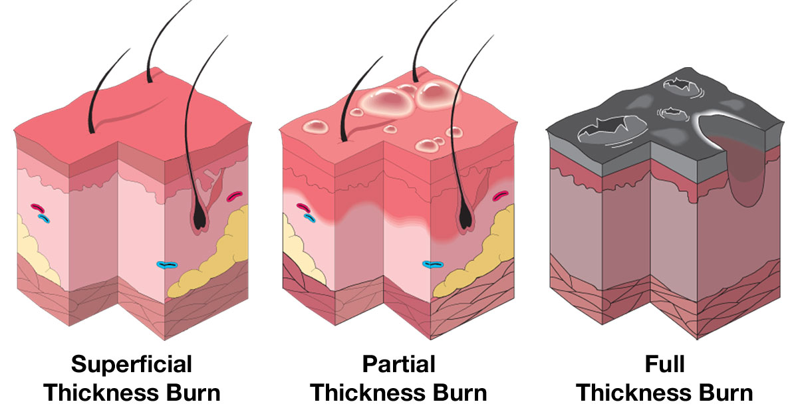

Burns and Scalds
Burns and Scalds
Burns are injuries that damage and kill skin cells, and are most commonly caused by exposure to flames, hot objects, hot liquids, chemicals, radiation or a combination of these. Scalds are caused by contact with wet heat such as boiling fluids or steam. Electrical burns are less common, but have the potential to be more serious as the depth of the burn is usually greater than is apparent, and heart irregularities may occur.
As with most potentially serious injuries, prevention is better than cure. All homes should be fitted with smoke detectors. Keep hot objects, such as kettles, safely out of reach of children and make sure to turn off heaters and stoves when not in use.
Also keep all electrical wires away from water, place socket caps over all unused electrical sockets and have your leads tested and tagged regularly. Keep household chemicals out of reach of children, ensure these are well marked and their caps are screwed on tight.
Burns are most commonly caused by exposure to flames, hot objects, hot liquids, chemicals or radiation.
Scalds are caused by contact with wet heat such as boiling fluids or steam.
A doctor should see infants or children who receive any burns.
It is important that any casualty who has inhaled smoke, fumes or superheated air, or has been burnt on the face, seeks medical aid as soon as possible after the incident.
Electrical burns have the potential to be more serious as the depth of the burn is usually greater than is apparent and cardiac (heart) irregularities may occur.

Burns are classified as either:
Superficial
 Reddening (like sunburn)
Reddening (like sunburn)
 Damage to outer layer of skin only
Damage to outer layer of skin only
Partial thickness
 Blistering
Blistering
 Damage to outer layer of skin
Damage to outer layer of skin
Full thickness
 White or blackened areas
White or blackened areas
 Damage to all layers of skin, plus underlying structures and tissues
Damage to all layers of skin, plus underlying structures and tissues

Signs and Symptoms
 red, blistered, white or blackened skin
red, blistered, white or blackened skin
 pain in superficial and partial thickness burns
pain in superficial and partial thickness burns
 signs of shock
signs of shock
 breathing difficulties
breathing difficulties
 hoarse voice and/or snoring sound when breathing
hoarse voice and/or snoring sound when breathing

Care and Treatment
 ensure safety
ensure safety
 call Triple Zero (000) for an ambulance
call Triple Zero (000) for an ambulance
 put on disposable gloves if available
put on disposable gloves if available
 cool only with clean water if possible and resist using other substances
cool only with clean water if possible and resist using other substances
 up to 20 minutes for thermal or radiation burns
up to 20 minutes for thermal or radiation burns
 for at least 20 minutes for chemical burns
for at least 20 minutes for chemical burns
 for at least 30 minutes for bitumen burns
for at least 30 minutes for bitumen burns
 if medical assistance is delayed and the limb is completely encircled, split the bitumen lengthwise as it cools
if medical assistance is delayed and the limb is completely encircled, split the bitumen lengthwise as it cools
 keep phosphorous burns wet at all times
keep phosphorous burns wet at all times
 remove phosphorus particles using forceps only
remove phosphorus particles using forceps only
 cover with a clean, non-stick sterile dressing (or plastic wrap etc.)
cover with a clean, non-stick sterile dressing (or plastic wrap etc.)
 remove tight clothing and objects, eg. rings, jewellery
remove tight clothing and objects, eg. rings, jewellery
 treat for shock if the burn is severe
treat for shock if the burn is severe
 ensure that contaminated or smouldering clothing is removed unless it is sticking to the skin
ensure that contaminated or smouldering clothing is removed unless it is sticking to the skin
 flush chemicals from the skin, pay special attention to eyes
flush chemicals from the skin, pay special attention to eyes
 DO NOT break blisters
DO NOT break blisters
 DO NOT attempt to remove bitumen from the skin or eyes
DO NOT attempt to remove bitumen from the skin or eyes
 avoid the use of lotions and creams
avoid the use of lotions and creams
 ensure cooling is not excessive resulting in shivering
ensure cooling is not excessive resulting in shivering
Burns to the face may have an effect on the casualty's breathing, and these effects may take some time to appear.
Seek medical aid if the:
 Burn is larger than the casualty's palm
Burn is larger than the casualty's palm
 Casualty has inhaled smoke, fumes or superheated air
Casualty has inhaled smoke, fumes or superheated air
 Casualty is an infant or child
Casualty is an infant or child
 Burns involve the hands, face or genitals
Burns involve the hands, face or genitals
 Burn was caused by:
Burn was caused by:
 lasers
lasers
 industrial microwave equipment
industrial microwave equipment
 infra-red or ultra-violet rays
infra-red or ultra-violet rays
 nuclear radiation
nuclear radiation

Hydrogel dressings or gel are a suitable alternative when water is not available.